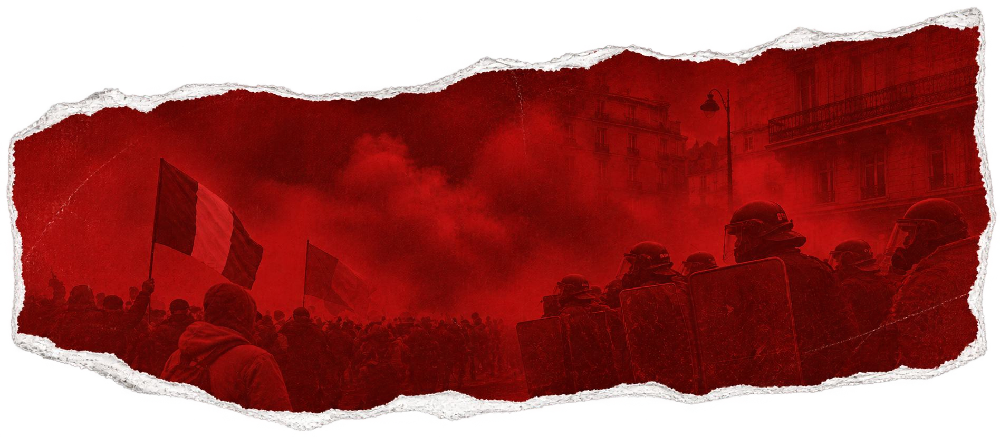
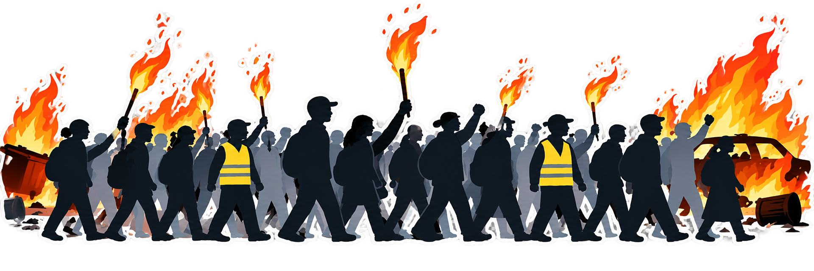
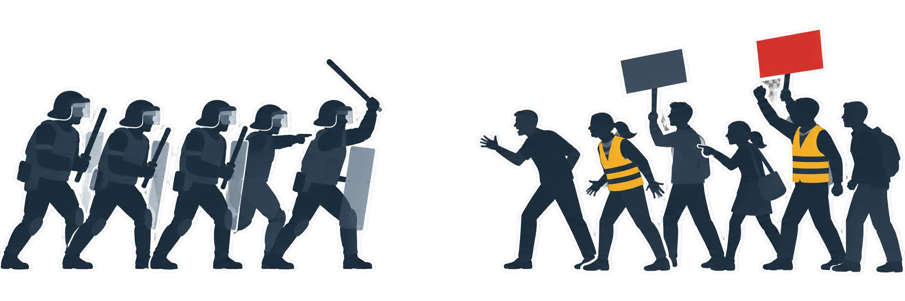
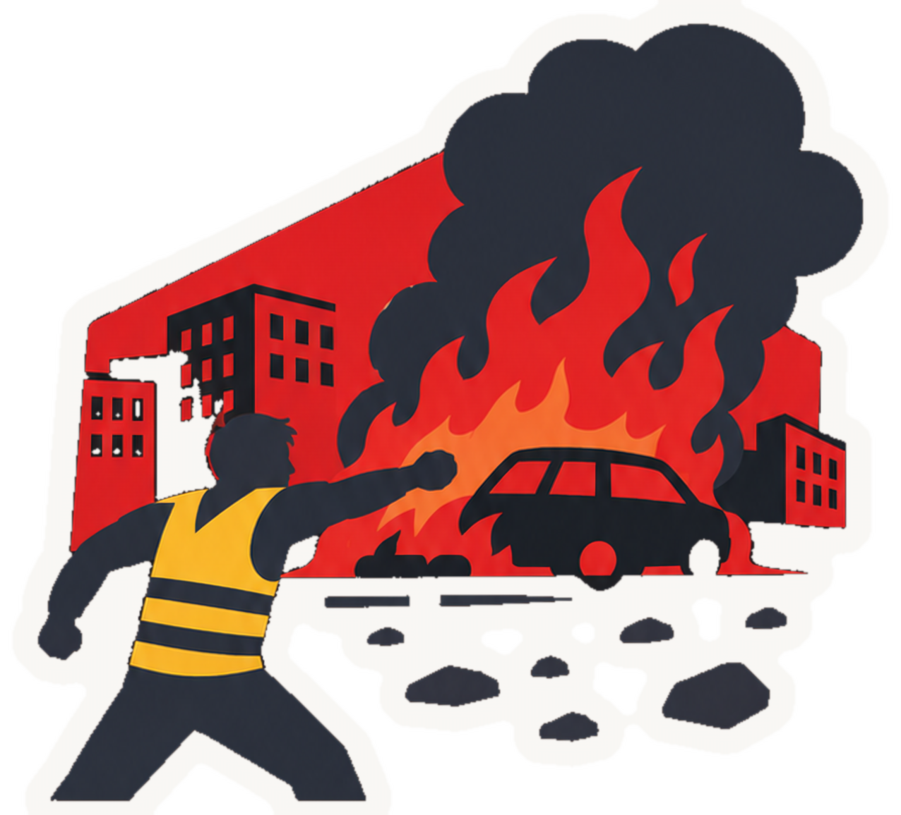
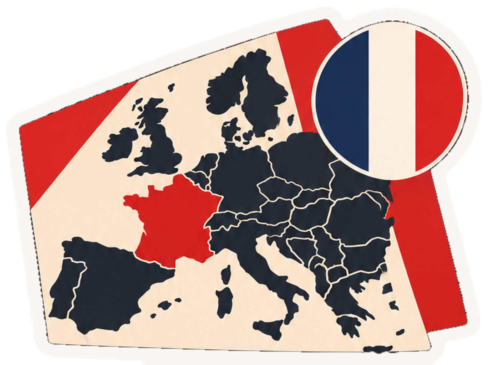
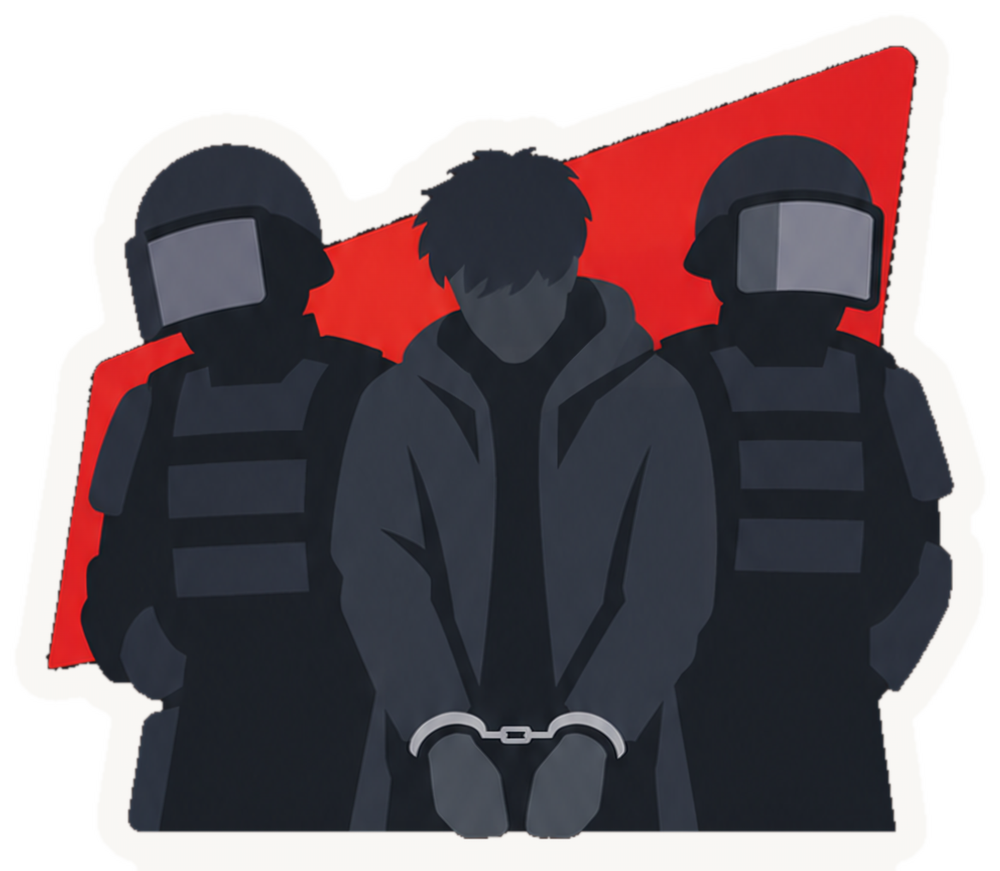
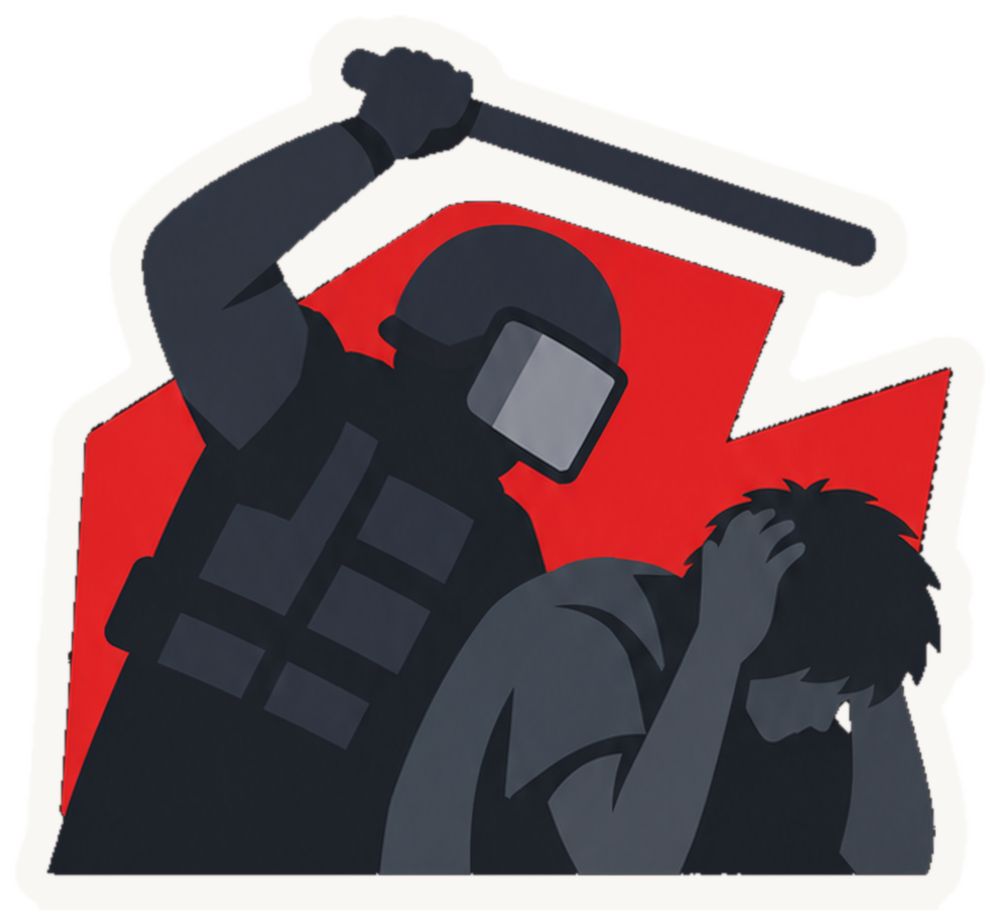
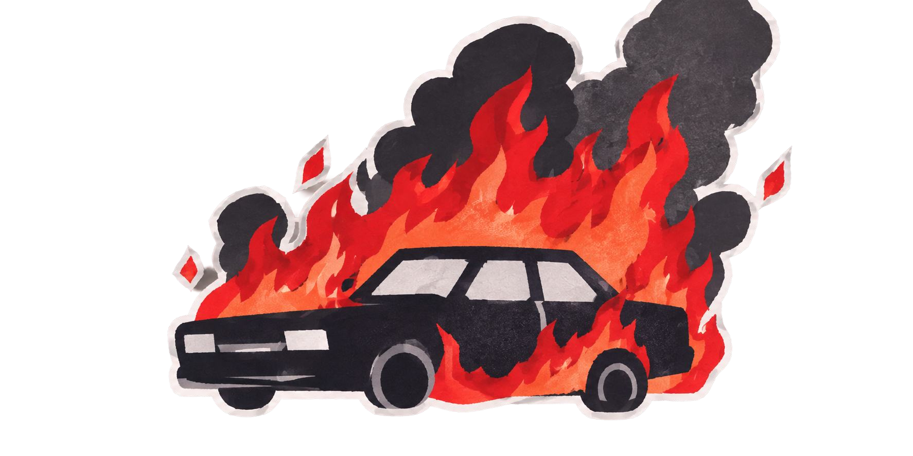
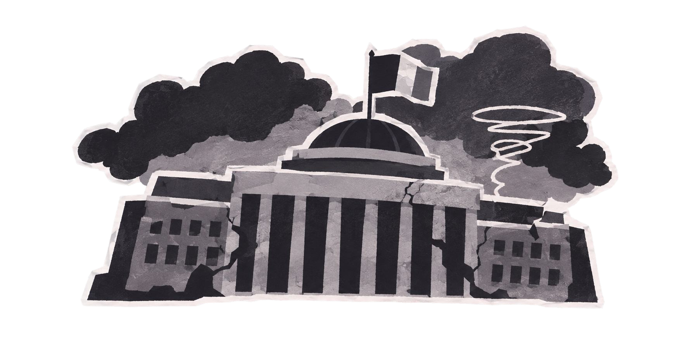
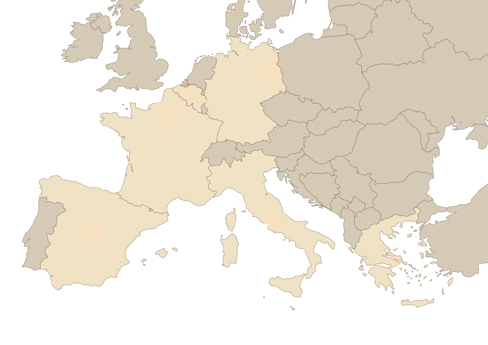

교실에서 시작되다
과밀 학급, 교사 부족, 낡은 학교 건물에
항의하는 고등학생들의 시위로 시작
400 / 3,700
- 9월 30일 기준 시위 영향을 받은 고등학교 수

왜 프랑스는 또다시 거리로 나왔을까.
노동자, 학생, 노란 조끼. 서로 다른 사람들이 같은 구호를 외치고 있다.
이 질문에 대한 답은 프랑스를 넘어 유럽 전체를 향한다.
2026년 9월, 한 고등학교에서 시작된 항의는 두 달 만에 프랑스 전역을 뒤흔든 시위가 됐다.
그 흐름을 시간 순서대로 따라간다.
2026. 09 중순
과밀 학급, 교사 부족, 낡은 학교 건물에
항의하는 고등학생들의 시위로 시작
400 / 3,700
- 9월 30일 기준 시위 영향을 받은 고등학교 수
2026. 09 - 10
교육 문제가 생활비 상승에 대한 분노로
넓어졌고, 노조와 '노란 조끼' 운동이 합류
2026. 10. 17
전국 50만 명(파리 11만) 시위, 3대 도시
일부 통제 불능. 시청 난입·방화 잇따름
3,000
- 24시간 동안 약탈당한 상점 수

2026. 10. 24-31
여러 도시에서 극우 단체가 시위대와
충돌했고, 핼러윈 밤에는 파리에서
화염병 공격으로 헌병 3명이 다쳤음

2026. 11. 14
시위 참가자는 줄었지만 다섯 번째
토요일 연속으로 시위가 이어졌고,
전국 약 10만 6천 명, 파리 2만 4천 명 참가
70,000
- 이날 배치된 경찰·헌병 수
시위의 규모와 진압의 강도는 숫자에서 먼저 드러난다.
66건
하루 평균 시위
최근 5년 평균 20.5건에서
약 3.2배 증가

2,700건
10월 시위, 폭동
약 2,700건으로,
전년 동월 대비 386% 증가

54%
유럽 시위 중 프랑스 비중
2024년 이후 평균 약 22% 에서
2026년 10월 54%로 확대

4,900명+
구금된 용의자
10월 17일 이후
11월 3일 발표 기준 _ 단위: 명
7,000명
미성년자 체포
학교 봉쇄 과정에서
약 7,000명 체포

161건
경찰 폭력 의혹 조사
9월 이후 경찰 내부
감찰 기관이 착수
교실에서 시작된 분노는 국가 운영 전반에 대한 불신으로 번졌다.
빚은 늘고 지출은 줄어든다.
나라 살림의 문제는 결국 교실과
병원, 우리 삶의 문제가 된다.
오르는 물가, 멈춘 기회.
가장 먼저 거리로 나온 건
미래가 불안한 10대였다.
정부는 바뀌어도 답은 없다.
중도가 힘을 잃은 자리를
양 극단이 채우고 있다.
이번 시위의 직접 원인은
아니지만, 프랑스와 유럽을 가르는
또 하나의 오래된 균열이다.
오래 쌓인 불만에 불을 붙인 건 네 가지 장면이었다.
노조는 2026년 전국에서 교사 정원 3,256개를 없앤 정부의 감축을 원인으로 지목했다.
노조 조사에 따르면 센생드니 학교의 3분의 2에 교사 공석이 있다.
3,256- 2026년에 줄어든 교사 정원
2027년 예산안에서 교육 예산은 1,7% 늘어난 655억 3천만 유로로, 물가상승률에도 못 미친다.
같은 해 국가부채 이자는 745억 유로로 예상된다. 학생 시위는 540억 유로 규모의 지출 삭감과
절감안이 담긴 예산안에 반대하는 공공부문 전국 파업과 같은 시기에 일어났다.
€745억 > €655억- 국가부채 이자 vs 교육 예산
경찰 폭력, 대규모 체포, 행진 제한이 오히려 시위를 넓혔다.
2018~19년 연료비에 항의했던 '노란 조끼' 운동도 돌아왔다

마크롱은 4월 대선에 출마하지 않는다.
빠듯한 재정 때문에 요구를 들어줄 여지가 적고,
그의 중도 정당은 주요 법안 통과에 필요한 과반을 잃었다.

도화선이 불을 붙였다면, 그 아래에는 오래전부터 쌓여 온 화약이 있었다.
프랑스 위기를 만든 네 가지 구조적 원인을 살펴본다.
2025년 프랑스의 재정적자는 GDP의 5,1%, 국가부채는 3조 4,605억 유로(GDP의 115,6%)였다. 이자 부담은 647억 유로로 1년 사이 11,2% 늘었다. 정부는 적자를 줄이려면 지출 삭감이 불가피하다고 말한다. 시민들은 교육·공공서비스 축소가 삶을 더 어렵게 만든다고 반발한다.
청년층의 불안은 숫자로 확인된다. 2024년 18세 미만의 22,4%가 빈곤선 아래에서 살았다. 2025년 15~24세 고용률은 35%로 EU 평균 수준이지만, 일도 교육도 훈련도 받지 않는 청년(NEET) 비율이 11%로 특히 높다. 이번 시위가 파리 북부 노동계층 교외의 고등학교에서 시작됐다는 점은 이 세대적 불안을 상징적으로 보여준다.
기존 중도 정치에 대한 불만이 커지면서 양극단 세력이 함께 커지고 있다.
11월 IFOP·LCI 여론조사에서 마린 르펜(국민연합, RN)은 대선 1차 투표 지지율 35~37%, 장뤽 멜랑숑(굴복하지 않는 프랑스, LFI)은
17,5~18%로 1, 2위를 차지했다. 정치 불안정은 정책에도 드러난다.
2023년 연금개혁(정년 64세)은 정부가 또 무너지는 걸 막고 2026년 예산을 통과시키기 위해 유예됐다.
⚠️ 이번 시위의 직접 원인은 이민이 아니다. 직접 쟁점은 교육, 생활비, 임금, 공공서비스, 정부의 재정정책이다.
이민 문제는 프랑스와 유럽의 정치적 양극화를 설명하는 별개의 구조적 갈등이다.
2024년 프랑스의 외국인 600만 명은 인구의 8,8%, 이민자 770만 명은 11,3%다. 외국인 비율은 EU 평균(9,6%)보다 낮다. 논쟁은 이민자 수용과 인도주의적 책임, 노동시장 참여, 공공서비스 접근, 문화적 통합을 둘러싸고 벌어진다. 한쪽은 이민 통제와 국가 정체성을 강조하고, 다른 쪽은 인권 보호와 차별 방지를 강조한다.
같은 거리, 같은 장면을 두고 정부와 시위대는 전혀 다른 이야기를 한다.
폭력의 배후에는 극좌 급진주의자와 "기회주의적 범죄자"들이 있습니다.
경찰을 늘리고 군을 투입했으며, 통행금지와 행진 금지도 내렸습니다.
지금은 질서 회복이 먼저입니다.
진압이 오히려 분노를 키웠습니다. 미성년자만 약 7,000명이 체포됐고,
유엔 전문가들은 "과도한 무력 사용"을 우려했습니다.
국제앰네스티는 프랑스가 "권위주의"로 기울고 있다고 경고하고 있습니다.
가담자에게는 재판 전 구금과 신속 재판으로 "매우 단호한 사법 대응"을
하겠습니다. 동시에 교육 개선안과 최저임금 조기 인상도 내놓았습니다.
"분노에 귀 기울이되", "공화국 질서에 대한 존중"은 지켜져야 합니다.
판사·검사 노조는 정부가 사법을 "도구화"하고 있다고 말합니다.
학생과 노조는 양보안이 불충분하다고 봅니다.
게다가 경찰의 법적 보호를 강화하는 법안까지 나오면서
갈등은 더 깊어지고 있습니다.
프랑스의 위기는 프랑스만의 이야기가 아니다. 재정 압박, 긴축, 세대 간 불평등은 유럽 곳곳
에서 비슷한 모습으로 나타나고 있다.
지도 위의 붉은 지점을 눌러 나라별 상황을 확인해 보세요.

주택 가격과 임대료 상승으로
청년층의 주거 불안이 심화되고 있다.
소득에 비해 높은 주거비는 경제적 자립을
어렵게 만들고 있으며, 경제성장의 성과가
시민들의 실질적인 생활 안정으로
이어지지 못한다는 불만이 나타나고 있다.
높은 국가부채와 재정적자 속에서
정부의 긴축정책에 대한 반발이
커지고 있다. 생활비 부담과
임금 문제, 교육·의료·복지
축소에 대한 우려가 시민들의
불만으로 이어지고 있으며,
이러한 갈등은 시위와
정치적 불신으로 확대되고 있다.
정부의 재정개혁과 사회보장제도
개편을 둘러싸고 노동계와 시민들의
반발이 이어지고 있다. 연금과 노동정책,
공공지출 조정에 대한 불만이 파업과
시위로 나타나면서, 재정 건전성과
노동자의 권리 사이의 갈등이 부각되고 있다.
경제성장 둔화와 복지 지출을
둘러싼 논쟁이 심화되고 있다.
국방비 확대와 사회보장제도의
지속가능성이 주요 쟁점으로
떠오르면서, 청년층을 중심으로
미래의 경제적 안정과 사회적
부담에 대한 우려가 나타나고 있다.
높은 국가부채와 장기적인
저성장, 고령화가 경제적 부담을
가중시키고 있다. 청년 실업과 지역 간
경제격차도 지속되고 있으며,
정부는 재정 건전성을 유지하면서
복지와 경제성장을 동시에
확보해야 하는 과제에 직면해 있다.
2010년대 국가채무 위기 당시 시행된
긴축정책은 복지 축소와 실업,
소득 감소 등 심각한 사회적 갈등을 초래했다.
이후 경제가 회복세를 보이고 있지만,
당시의 위기는 재정적 부담이 시민들의
삶에 어떤 영향을 미칠 수 있는지를
보여주는 사례로 남아 있다.